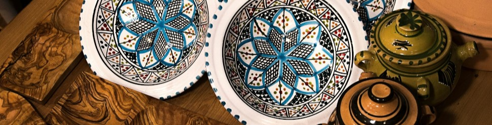

Seja muito bem-vindo à Arte & Charme!
Este é o cantinho da Dona Clara, uma senhorinha apaixonada pelo artesanato, que dedica seu tempo e carinho para criar peças únicas, feitas à mão com muita delicadeza e atenção aos detalhes.
Aqui, cada criação carrega um pedacinho de amor e de história, tornando-se muito mais que um produto: é um presente cheio de charme e significado.
Sinta-se à vontade para explorar a lojinha e encontrar aquela peça especial que vai encantar você ou alguém querido!
Dona Clara — Arte & Charme
Categorias dos meus produtos
Glossário da Artesã
- Ponto Cruz
- Aquela técnica de bordado que forma um 'X'.
- Macramê
- Uma tecelagem feita com nós.